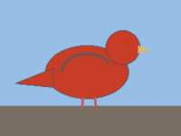
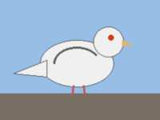

| ГОЛУБИ НУРЖАНАPIGEONS OF NURZHAN · tumblers · since 1961 | |
Главная / Main | Породы / Breeds | Советы / Advice | Guestbook | Здравствуйте, голубеводы! Hello, pigeon friends! My name is Mikhail Ivanovich Gorshkov, I am 71 years old, and I have kept pigeons since 1961, when I came to Kobozev to build the refinery. In those years every second yard in Dastgoh had a loft. Now there are maybe twenty of us in the whole city. My grandson made this site so that the young people know: the pigeon is not a bird of the street, it is a sport and an art. I keep tumblers (бойные голуби): birds that fly high and turn over in the air with a clap of the wings, the "boi". A good tumbler flies 3–4 hours and turns over in a column, like a falling leaf.   Новости / News05.2012 Sold the last young birds of 2011. Thank you. There will be no sale in 2012, my health. |
| Михаил Иванович Горшков, Нуржан, Дастгох. Тел. 3-41-17 (вечером). Site: grandson Denis. | |